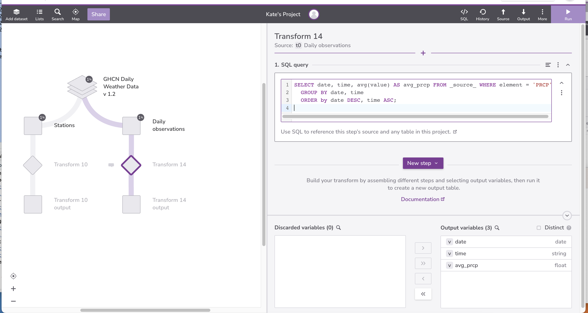
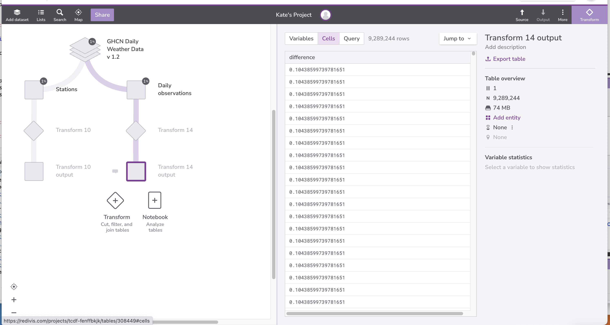
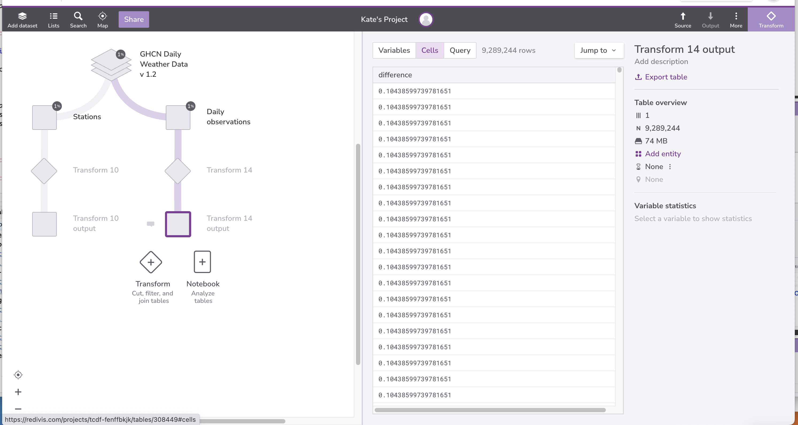
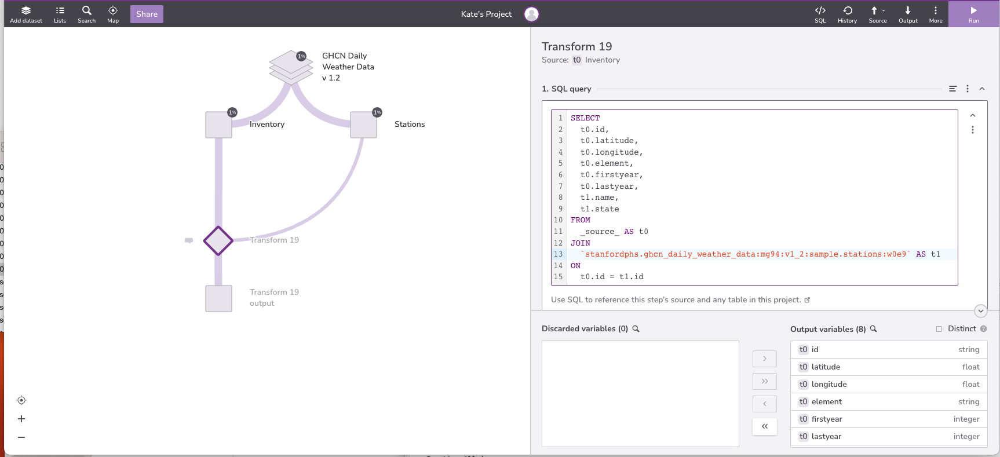

Content from Selecting Data
Last updated on 2023-10-05 | Edit this page
Overview
Questions
- How can I get data from a database?
Objectives
- Write a query to select all values for specific fields from a single table.
A relational database is a way to store and manipulate information. Databases are arranged as tables. Each table has columns (also known as fields) that describe the data, and rows (also known as records) which contain the data.
When we are using a spreadsheet, we put formulas into cells to calculate new values based on old ones. When we are using a database, we send commands (usually called queries) to a database manager: a program that manipulates the database for us. The database manager does whatever lookups and calculations the query specifies, returning the results in a tabular form that we can then use as a starting point for further queries.
Queries are written in a language called SQL, which stands for “Structured Query Language”. SQL provides hundreds of different ways to analyze and recombine data. We will only look at a handful of queries, but that handful accounts for most of what scientists do.
Let’s take a look at the tables of the database we will use in our examples.
In your Redivis project, select the database node.

On the right-hand side of the page, we will see that there are 5 tables associated with this database:
CountriesDaily observationsInventoryStatesStations
Let’s select Stations.

The Stations table includes information about each
station. The Variables tab shows us 10 variables and
their types.

We can select specific variables for summary statistics about that
variable. Let’s select state. Under Variable
statistics we can learn more about this variable, such as the
frequency with which certain values occur and the number of distinct
(unique) values. Note that the state variable is 100%
non-null. We’ll return to these missing values later.

Finally, we can select the Cells tab to preview records.

Let’s write an SQL query that displays station names and what state the stations are located in.
Select the Transform node. Transform nodes are where we will write our SQL queries.
Select New step and then SQL query. A query editor will display on the right side of the page; it will be populated with a default query.
Now we will write a SQL SELECT command, giving it the
names of the columns we want and the table we want them from. Our query
will look like this:
SQL
SELECT state, name FROM _source_;Select Run in the upper right-hand corner. Then select the output table node. Here we can see the results of the query.


We have written our commands in upper case and the names for the table and columns in lower case, but we don’t have to: as the example below shows, SQL is case insensitive.
SQL
SeLeCt StAtE,nAmE FrOm _source_

You can use SQL’s case insensitivity to distinguish between different
parts of an SQL statement. In this lesson, we use the convention of
using UPPER CASE for SQL keywords (such as SELECT and
FROM), and lower case for field names. Whatever casing
convention you choose, please be consistent: complex queries are hard
enough to read without the extra cognitive load of random
capitalization.
Now, going back to our query, it’s important to understand that the rows and columns in a database table aren’t actually stored in any particular order. They will always be displayed in some order, but we can control that in various ways. For example, we could swap the columns in the output by writing our query as:
SQL
SELECT name,state FROM _source_
As a shortcut, we can select all of the columns in a table using
*:
SQL
SELECT * FROM _source_
Integers:
wmoid
Floats:
latitudelongitudeelevation
Integers are whole numbers. Floats are numbers with decimal places.
SQL
SELECT geopoint FROM _source_Key Points
- A relational database stores information in tables, each of which has a fixed set of columns and a variable number of records.
- A database manager is a program that manipulates information stored in a database.
- We write queries in a specialized language called SQL to extract information from databases.
- Use SELECT… FROM… to get values from a database table.
- SQL is case-insensitive (but data is case-sensitive).
Content from Sorting and Removing Duplicates
Last updated on 2023-10-10 | Edit this page
Overview
Questions
- How can I sort a query’s results?
- How can I remove duplicate values from a query’s results?
Objectives
- Write queries that display results in a particular order.
- Write queries that eliminate duplicate values from data.
In beginning our examination of the GHCN Daily Weather Data, we want to know:
- what kind of elements (observation types) were taken at each station;
- when did these observations occur;
To determine which kinds of observations were taken, we can examine
the Daily observations table. Data is often redundant, so
queries often return redundant information. For example, if we select
the observation types that have been measured from the
Daily observations table, we get this:
SQL
SELECT element FROM _source_;

This result makes it difficult to see all of the different types of
elements in the Daily observations table. We
can eliminate the redundant output to make the result more readable by
adding the DISTINCT keyword to our query:
SQL
SELECT DISTINCT element FROM _source_;

If we want to determine the stations (represented by id)
at which different observation types were recorded, we can use the
DISTINCT keyword on multiple columns. If we select more
than one column, distinct sets of values are returned (in this
case pairs, because we are selecting two columns):
SQL
SELECT DISTINCT id, element FROM _source_;

Our next task is to identify when weather observations occurred. As
we mentioned earlier, database records are not stored in any particular
order. This means that query results aren’t necessarily sorted, and even
if they are, we often want to sort them in a different way, e.g., by
date. We can do this in SQL by adding an ORDER BY clause to
our query:
SQL
SELECT * FROM _source_ ORDER BY date;
By default, when we use ORDER BY, results are sorted in
ascending order of the column we specify (i.e., from least to
greatest).
Date Types
Most database managers have a special data type for dates. In fact, many have two: one for dates, such as “May 31, 1971”, and one for durations, such as “31 days”. Redivis stores Dates and DateTimes. The former is formatted as ‘YYYY-[M]M-[D]D’:
- YYYY: Four digit year
- [M]M: One or two digit month
- [D]D: One or two digit day
The latter is formatted as ‘YYYY-[M]M-[D]D[( |T)[H]H:[M]M:[S]S[.DDDDDD]]’:
- YYYY: Four digit year
- [M]M: One or two digit month
- [D]D: One or two digit day
- ( |T): A space or a Tseparator
- [H]H: One or two digit hour (valid values from 00 to 23)
- [M]M: One or two digit minutes (valid values from 00 to 59)
- [S]S: One or two digit seconds (valid values from 00 to 59)
- [.DDDDDD]: Up to six fractional digits (i.e. up to microsecond precision)
We can sort in the opposite order using DESC (for
“descending”):
SQL
SELECT * FROM _source_ ORDER BY date DESC;

(And if we want to make it clear that we’re sorting in ascending
order, we can use ASC instead of DESC.)
If we want a more complete picture of when weather observations took
place, we can sort on several fields at once. This query sorts results
first in descending order by date, and then in ascending
order by time:
SQL
SELECT id, element, date, time FROM _source_ ORDER BY date DESC, time ASC;
SQL
SELECT DISTINCT date FROM _source_;
SQL
SELECT state, name FROM _source_ ORDER BY state ASC, name ASC;

Key Points
- The records in a database table are not intrinsically ordered: if we want to display them in some order, we must specify that explicitly with ORDER BY.
- The values in a database are not guaranteed to be unique: if we want to eliminate duplicates, we must specify that explicitly as well using DISTINCT.
Content from Filtering
Last updated on 2023-10-10 | Edit this page
Overview
Questions
- How can I select subsets of data?
Objectives
- Write queries that select records that satisfy user-specified conditions.
- Explain the order in which the clauses in a query are executed.
One of the most powerful features of a database is the ability to filter data, i.e., to select only those
records that match certain criteria. For example, suppose we want to see
all of the stations in Texas. We can select these records from the
Stations table by using a WHERE clause in our
query:
SQL
SELECT * FROM _source_ WHERE state = 'TX';

The database manager executes this query in two stages. First, it
checks at each row in the Station table to see which ones
satisfy the WHERE. It then uses the column names following
the SELECT keyword to determine which columns to
display.
This processing order means that we can filter records using
WHERE based on values in columns that aren’t then
displayed:
SQL
SELECT id FROM _source_ WHERE state = 'TX';
We can use many other Boolean operators to filter our data. For example, we can ask for all information from the stations at elevations less than 50 meters:
SQL
SELECT * FROM _source_ WHERE state = 'TX' AND elevation < 50;

If we want to find stations in either Texas or Oklahoma, we can
combine the tests on their names using OR:
SQL
SELECT * FROM _source_ WHERE state = 'TX' OR state = 'OK';

Alternatively, we can use IN to see if a value is in a
specific set:
SQL
SELECT * FROM _source_ WHERE state IN ('TX', 'OK');
We can combine AND with OR, but we need to
be careful about which operator is executed first. If we don’t
use parentheses, we get this:
SQL
SELECT * FROM _source_ WHERE elevation < 50 AND state = 'TX' OR state = 'OK';which is stations from Texas at less than 50 meters elevation, and any stations from Oklahoma.

We probably want this instead:
SQL
SELECT * FROM _source_ WHERE elevation < 50 AND (state = 'TX' OR state = 'OK');
We can also filter by partial matches. For example, if we want to
know something just about the station ids beginning with “MD” we can use
the LIKE keyword. The percent symbol acts as a wildcard, matching any characters in
that place. It can be used at the beginning, middle, or end of the
string:
SQL
SELECT * FROM _source_ WHERE id LIKE 'MD%';
Finally, we can use DISTINCT with WHERE to
give a second level of filtering. Let’s look at an example using the
Daily observations table :
SQL
SELECT DISTINCT id FROM _source_ WHERE element = 'SNOW';

But remember: DISTINCT is applied to the values
displayed in the chosen columns, not to the entire rows as they are
being processed.
Growing Queries
What we have just done is how most people “grow” their SQL queries. We started with something simple that did part of what we wanted, then added more clauses one by one, testing their effects as we went. This is a good strategy — in fact, for complex queries it’s often the only strategy — but it depends on quick turnaround, and on us recognizing the right answer when we get it.
The best way to achieve a quick turnaround is often to put a subset of data in a temporary database and run our queries against that, or to fill a small database with synthesized records. For example, instead of trying our queries against an actual database of 20 million Australians, we could run it against a sample of ten thousand, or write a small program to generate ten thousand random (but plausible) records and use that.
Because we used OR, a site on the South Pole for example
will still meet the second criteria and thus be included. Instead, we
want to restrict this to sites that meet both criteria:
SQL
SELECT * FROM _source_ WHERE (latitude > -30) AND (latitude < 30);Finding Outliers
We see that some observations have negative values. Let’s make sure
these are not incorrect data. Using the the
Daily observations table, write a query that selects unique
observations with values less than 0. Then, look up these observation
types in the GHCND
Documentation. Is it possible for these observation types to have
negative values?
SQL
SELECT DISTINCT element FROM _source_ WHERE value < 0;| element |
|---|
| TAVG |
| SX32 |
| SN52 |
| TMIN |
| SX02 |
| SN32 |
| MNPN |
| TMAX |
| EVAP |
| TOBS |
| MXPN |
| DAPR |
| MDTN |
| SN02 |
At least for some of these observations, negative values seem possible. For example, TOBS is temperature at the time of observation. Temperatures can in fact be negative.
- True because these are the same character.
- True because the wildcard can match zero or more characters.
- True because the
%matchesbetand theamatches thea. - True because the first wildcard matches
lphaand the second wildcard matches zero characters (or vice versa). - True because the first wildcard matches
land the second wildcard matchesha.
Content from Calculating New Values
Last updated on 2023-10-10 | Edit this page
Overview
Questions
- How can I calculate new values on the fly?
Objectives
- Write queries that calculate new values for each selected record.
We realize that the reported precipitation measurements may need to be corrected upward by 5%. Rather than modifying the stored data, we can do this calculation on the fly as part of our query:
SQL
SELECT value AS original_value, value * 1.05 AS updated_value FROM _source_
WHERE element = "PRCP" AND value > 0;When we run the query, the expression value * 1.05 is
evaluated for each row where the element is precipitation and the
measurement is greater than 0.


Renaming variables
We can use the keyword AS to rename the variables in our
output. SQL allows us to rename our fields, any field for that matter,
whether it was calculated or one of the existing fields in our database,
for succinctness and clarity. In Redivis, we must
rename calculated variables, or Redivis will throw an error.
Expressions can use any of the fields, all of usual arithmetic operators, and a variety of common functions. (Exactly which ones depends on which database manager is being used.) For example, we can convert average temperature readings from Celsius to Fahrenheit and round to one decimal place:
SQL
SELECT value AS celsius, round(value * 9/5 + 32,1) AS fahrenheit
FROM _source_ WHERE element = 'TAVG' AND value > 0;We can also combine values from different fields, for example by
using the string concatenation operator ||:
SQL
SELECT DISTINCT date || ': ' || time AS date_time FROM _source_;

SQL
SELECT value AS per_second, (value * 60) AS per_minute FROM _source_
WHERE element = 'AWND' AND value >0;

Unions
The UNION ALL operator combines the results of two
queries. UNION ALL will not eliminate duplicate rows.
The UNION DISTINCT operator also combines the results of
two queries, and then does a SELECT DISTINCT on the results
set.
SQL
SELECT * FROM _source_ WHERE element = 'AWND'
UNION DISTINCT
SELECT * FROM _source_ WHERE element = 'PRCP';

Selecting Major Site Identifiers
In the Daily observations table, time is
formatted as a string.
The substring function substr(X, I, [L]) returns the
substring of X starting at index I, with an optional length L.
Use the substring function to return the hour daily observations were made, sorted from greatest to smallest.
SQL
SELECT SUBSTR(time, 1, 2) AS hour FROM _source_ ORDER BY hour DESC;
Content from Missing Data
Last updated on 2023-10-10 | Edit this page
Overview
Questions
- How do databases represent missing information?
- What special handling does missing information require?
Objectives
- Explain how databases represent missing information.
- Explain the three-valued logic databases use when manipulating missing information.
- Write queries that handle missing information correctly.
Real-world data is never complete — there are always holes. Databases
represent these holes using a special value called null.
null is not zero, False, or the empty string;
it is a one-of-a-kind value that means “nothing here”. Dealing with
null requires a few special tricks and some careful
thinking.
To start, let’s have a look at the Daily observations
table. If you look at the time variable frequency table,
there are 20,264,371 null values.
Null doesn’t behave like other values. If we select the records that are less than “1200” we get 3,400,669 results.
SQL
SELECT time from _source_ where time < "1200";

If we select the records that are greater than or equal to “1200” we get 2,809,928 results.
SQL
SELECT time from _source_ where time >= "1200";

Why aren’t the null values appearing in the results
sets? The reason is that null<'1200' and
null>='1200' are neither true nor false: null means, “We
don’t know,” and if we don’t know the value on the left side of a
comparison, we don’t know whether the comparison is true or false. Since
databases represent “don’t know” as null, the values of
null<'1200' and null>='1200' are both
null. And since the only records kept by a
WHERE are those for which the test is true, the
null values aren’t included in either set of results.
To check whether a value is null or not, we must use a
special test IS NULL:
SQL
SELECT time FROM _source_ WHERE time IS NULL;
or its inverse IS NOT NULL:
SQL
SELECT time FROM _source_ WHERE time IS NOT NULL;
Null values can cause headaches wherever they appear. For example, suppose we want to find all the measurements except for those taken at “2400.” It’s natural to write the query like this:
SQL
SELECT * FROM _source_ WHERE time != '2400';but this query filters omits the records where the time is unknown
(or null). Once again, the reason is that when
time is null, the != comparison
produces null, so the null records aren’t kept
in our results.

If we want to keep these records we need to add an explicit check:
SQL
SELECT * FROM _source_ WHERE (time != '2400' OR time IS NULL);
We still have to decide whether this is the right thing to do or not. If we want to be absolutely sure that we aren’t including any measurements taken at ‘2400’ in our results, we need to exclude all the records for which we don’t the time of the measurement.
In contrast to arithmetic or Boolean operators, aggregation functions
that combine multiple values, such as min, max
or avg, ignore null values. In the
majority of cases, this is a desirable output: for example, unknown
values are thus not affecting our data when we are averaging it.
Aggregation functions will be addressed in more detail in the next section.
SQL
SELECT DISTINCT qflag FROM _source_ WHERE qflag IS NOT NULL;

You might expect the above query to return rows where
time is either ‘2400’, ‘2300’ or NULL. Instead it only
returns rows where time is ‘2400’ or ‘2300’, the same as
you would get from this simpler query:
SQL
SELECT * FROM _source_ WHERE time IN ('2400', '2300');The reason is that the IN operator works with a set of
values, but NULL is by definition not a value and is therefore
simply ignored.
If we wanted to actually include NULL, we would have to rewrite the query to use the IS NULL condition:
SQL
SELECT * FROM _source_ WHERE time IN ('2400', '2300') OR time IS NULL;Pros and Cons of Sentinels
Some database designers prefer to use a sentinel value to mark missing
data rather than null. For example, they will use the date
“0000-00-00” to mark a missing date, or -1.0 to mark a missing salinity
or radiation reading (since actual readings cannot be negative). What
does this simplify? What burdens or risks does it introduce?
Content from Aggregation
Last updated on 2023-10-10 | Edit this page
Overview
Questions
- How can I calculate sums, averages, and other summary values?
Objectives
- Define aggregation and give examples of its use.
- Write queries that compute aggregated values.
- Trace the execution of a query that performs aggregation.
- Explain how missing data is handled during aggregation.
We now want to calculate ranges and averages for our data. We know
how to select all of the dates from the Daily observations
table:
SQL
SELECT date FROM _source_;but to combine them, we must use an aggregation function such
as min or max. Each of these functions takes a
set of records as input, and produces a single record as output:
SQL
SELECT min(date) AS min_date FROM _source_;| min_date |
|---|
| 1871-07-01 |


SQL
SELECT max(date) AS max_date FROM _source_;| max_date |
|---|
| 2021-12-31 |


min and max are just two of the aggregation
functions built into SQL. Three others are avg,
count, and sum:
SQL
SELECT avg(value) AS avg_value FROM _source_ WHERE element = 'PRCP';| avg_value |
|---|
| 24.895614002602183 |

SQL
SELECT count(element) AS count FROM _source_ WHERE element = 'PRCP';| count |
|---|
| 9289244 |

SQL
SELECT sum(value) AS sum FROM _source_ WHERE element = 'PRCP';| sum |
|---|
| 231261433.0 |


We used count(element) here, but we could just as easily
have counted date or any other field in the table, or even
used count(*), since the function doesn’t care about the
values themselves, just how many values there are.
SQL lets us do several aggregations at once. We can, for example, find the range of sensible precipitation measurements:
SQL
SELECT min(value) AS min, max(value) AS max FROM _source_
WHERE element = 'PRCP' AND value >= 0;| min | max |
|---|---|
| 0.0 | 22860.0 |

Another important fact is that when there are no values to aggregate
— for example, where there are no rows satisfying the WHERE
clause — aggregation’s result is “don’t know” rather than zero or some
other arbitrary value:
SQL
SELECT max(value) AS max, min(value) AS min
FROM _source_ WHERE element = 'IDK' AND value >= 0;| min | max |
|---|---|
| -null- | -null- |


One final important feature of aggregation functions is that they are
inconsistent with the rest of SQL in a very useful way. If we add two
values, and one of them is null, the result is null. By extension, if we
use sum to add all the values in a set, and any of those
values are null, the result should also be null. It’s much more useful,
though, for aggregation functions to ignore null values and only combine
those that are non-null. This behavior lets us write our queries as:
SQL
SELECT min(date) AS min FROM _source_;| min |
|---|
| 1871-07-01 |
instead of always having to filter explicitly:
SQL
SELECT min(date) AS min FROM _source_ WHERE date IS NOT NULL;| min |
|---|
| 1871-07-01 |
Let’s say that we want to know the average precipitation by date. If we try the following query, Redivis will throw an error:
SQL
SELECT date, avg(value) AS avg_prcp FROM _source_ WHERE element = 'PRCP';because Redivis doesn’t know which date to return alongside the average precipitation.

There are 54,963 unique dates. It’s not reasonable to write 54,963 queries of the form:
SQL
SELECT date, avg(value) AS avg_prcp FROM _source_
WHERE element = 'PRCP' AND date = YYYY-MM-DD;What we need to do is tell the database manager to aggregate the
average precipitation for each date separately using a
GROUP BY clause:
SQL
SELECT date, avg(value) AS avg_prcp FROM _source_ WHERE element = 'PRCP'
GROUP BY date
ORDER by date DESC;| date | avg_prcp |
|---|---|
| 2021-12-31 | 26.154761904761898 |
| 2021-12-30 | 32.957528957528964 |
| 2021-12-29 | 34.042307692307695 |
| 2021-12-28 | 16.272373540856034 |


GROUP BY does exactly what its name implies: groups all
the records with the same value for the specified field together so that
aggregation can process each batch separately.
Just as we can sort by multiple criteria at once, we can also group
by multiple criteria. To get the average reading by scientist and
quantity measured, for example, we just add another field to the
GROUP BY clause:
SQL
SELECT date, time, avg(value) AS avg_prcp FROM _source_ WHERE element = 'PRCP'
GROUP BY date, time
ORDER by date DESC, time ASC;| date | time | avg_prcp |
|---|---|---|
| 2021-12-31 | -null- | 27.441624365482234 |
| 2021-12-31 | 0600 | 0.0 |
| 2021-12-31 | 0630 | 5.0 |
| 2021-12-31 | 0700 | 8.1818181818181817 |
Note that we have added time to the list of fields
displayed, since the results wouldn’t make much sense otherwise.

Let’s go one step further and remove all the entries where we don’t know what time the measurement was taken:
SQL
SELECT date, time, avg(value) AS avg_prcp FROM _source_
WHERE element = 'PRCP' AND time NOT NULL
GROUP BY date, time
ORDER by date DESC, time ASC;| date | time | avg_prcp | |
|---|---|---|---|
| 2021-12-31 | 0600 | 0.0 | |
| 2021-12-31 | 0630 | 5.0 | |
| 2021-12-31 | 0700 | 8.1818181818181817 | |
| 2021-12-31 | 0800 | 35.625 | |
| 2021-12-31 | 1500 | 0.0 |


Looking more closely, this query:
selected records from the
Daily observationstable where theelementfield is ‘PRCP’ and thetimefield was not null;grouped those records into
dateandtimesubsets;ordered those subsets first by
date, and then bytime; andcalculated the average precipitation of each subset.
SQL
SELECT element, count(*) as count FROM _source_
GROUP by element;

The answer is 3.0. NULL is not a value; it is the
absence of a value. As such it is not included in the calculation.
We can accomplish this task using sub-queries.
SQL
SELECT value - (SELECT avg(value) AS avg
FROM _source_ WHERE element='PRCP') AS difference
FROM _source_ WHERE element = 'PRCP'; 

Content from Combining Data
Last updated on 2023-10-10 | Edit this page
Overview
Questions
- How can I combine data from multiple tables?
Objectives
- Explain the operation of a query that joins two tables.
- Explain how to restrict the output of a query containing a join to only include meaningful combinations of values.
- Write queries that join tables on equal keys.
- Explain what primary and foreign keys are, and why they are useful.
In order to submit our data to a web site that aggregates historical
meteorological data, we need to format it as a table with the columns
date, time, name,
state, geopoint, element and
value.
However, name, state and
geopoint are in the Stations table, while
date, time, element and
value are in the Daily observations table. We
need to combine these tables somehow.
The SQL command to do this is JOIN.
JOIN creates the cross product of two tables.
Let’s look at the skeleton of a JOIN query:
SQL
SELECT
[variables]
FROM
[table 1]
JOIN
[table 2]
ON
[common field]We want to join Daily observations
(_source_) with Stations
(stanfordphs.ghcn_daily_weather_data:mg94:v1_2:sample.stations:w0e9).
For clarity, we give our tables the aliases t0 and
t1.
SQL
SELECT
[variables]
FROM
_source_ AS t0
JOIN
`stanfordphs.ghcn_daily_weather_data:mg94:v1_2:sample.stations:w0e9` AS t1
ON
[common field]Next, we must choose field(s) on which to join our two tables. We
will join our tables ON the id field.
SQL
SELECT
[variables]
FROM
_source_ AS t0
JOIN
`stanfordphs.ghcn_daily_weather_data:mg94:v1_2:sample.stations:w0e9` AS t1
ON
t0.id = t1.idFinally, we select the variables we would like in our output. Notice
that we used Table.field to specify field names in the
output of the join. We do this because tables can have fields with the
same name, and we need to be specific which ones we’re talking about. We
have also given our selected variables more human-friendly names using
the AS operator.
SQL
SELECT
t0.id AS id,
t0.date AS date,
t0.time AS time,
t0.element AS element,
t0.value AS value,
t1.state AS state,
t1.name AS name,
t1.geopoint AS geopoint
FROM
_source_ AS t0
JOIN
`stanfordphs.ghcn_daily_weather_data:mg94:v1_2:sample.stations:w0e9` AS t1
ON
t0.id = t1.idHere is what our query and output look like in Redivis:


If joining two tables is good, joining many tables must be better. In
fact, we can join any number of tables simply by adding more
JOIN clauses to our query, and more ON tests
to filter out combinations of records that don’t make sense:
SQL
SELECT
t0.id AS id,
t0.date AS date,
t0.time AS time,
t0.element AS element,
t0.value AS value,
t1.id AS foreign_id,
t1.state AS state_code,
t1.name AS name,
t1.geopoint AS geopoint,
t2.name AS state_name
FROM
_source_ AS t0
JOIN
`stanfordphs.ghcn_daily_weather_data:mg94:v1_2:sample.stations:w0e9` AS t1
ON
t0.id = t1.id
LEFT JOIN
`stanfordphs.ghcn_daily_weather_data:mg94:v1_2.states:akcp` as t2
ON
t1.state = t2.code

In the above query, we join Daily observations with
Stations with States. Our output contains some
(but not all) of the variables included in each source table. Notice
that for the second JOIN, we use LEFT JOIN. By
doing this, we are asking the database:
Join on
Stations.state=States.code(these should both be two-letter abbreviations for state name)If a value of
Stations.statedoes not have any matches amongStates.code, return the valueStations.stateandStates.codeasnull.
Types of JOINS
There are several variations of JOIN. For more
information, check out the W3 Schools SQL
Tutorial. Note that a plain JOIN is equivalent to
INNER JOIN. A good visual explanation of joins can be found here
We can tell which records from Daily observations,
Stations and States correspond with each other
because those tables contain primary keys and foreign keys. A primary key is a
value, or combination of values, that uniquely identifies each record in
a table. A foreign key is a value (or combination of values) from one
table that identifies a unique record in another table. Another way of
saying this is that a foreign key is the primary key of one table that
appears in some other table.
Most database designers believe that every table should have a well-defined primary key. They also believe that this key should be separate from the data itself, so that if we ever need to change the data, we only need to make one change in one place.
SQL
SELECT
t0.id,
t0.latitude,
t0.longitude,
t0.element,
t0.firstyear,
t0.lastyear,
t1.name,
t1.state
FROM
_source_ AS t0
JOIN
`stanfordphs.ghcn_daily_weather_data:mg94:v1_2:sample.stations:w0e9` AS t1
ON
t0.id = t1.id
Key Points
- Use JOIN to combine data from two tables.
- Use table.field notation to refer to fields when doing joins.
- Every fact should be represented in a database exactly once.
- A join produces all combinations of records from one table with records from another.
- A primary key is a field (or set of fields) whose values uniquely identify the records in a table.
- A foreign key is a field (or set of fields) in one table whose values are a primary key in another table.
- We can eliminate meaningless combinations of records by matching primary keys and foreign keys between tables.
- The most common join condition is matching keys.